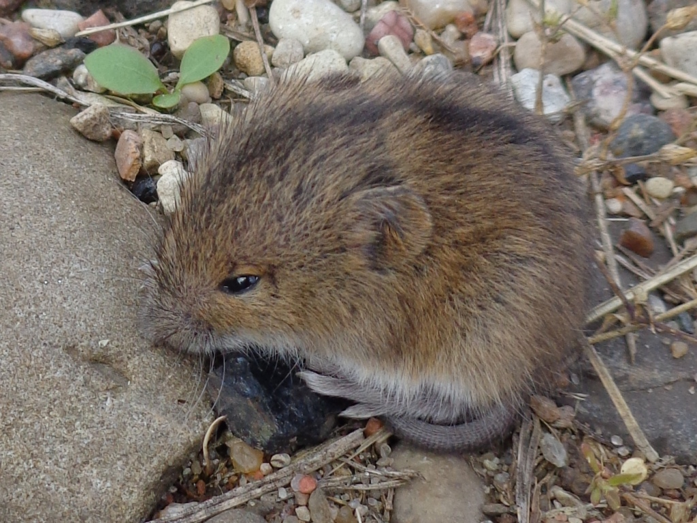
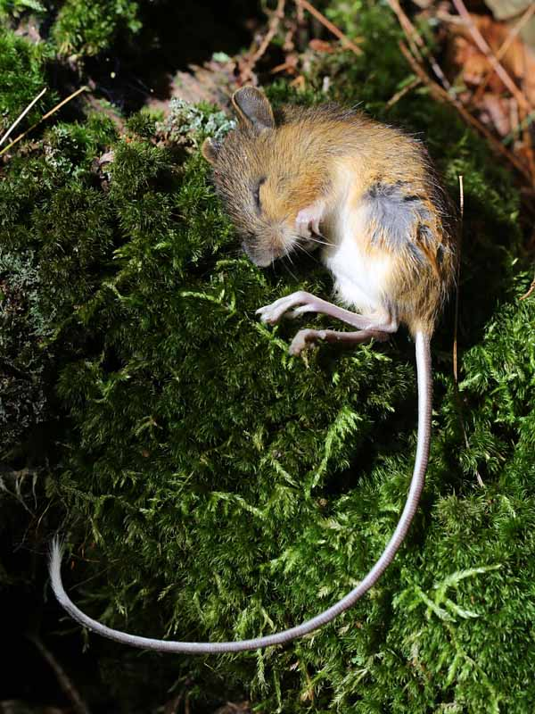
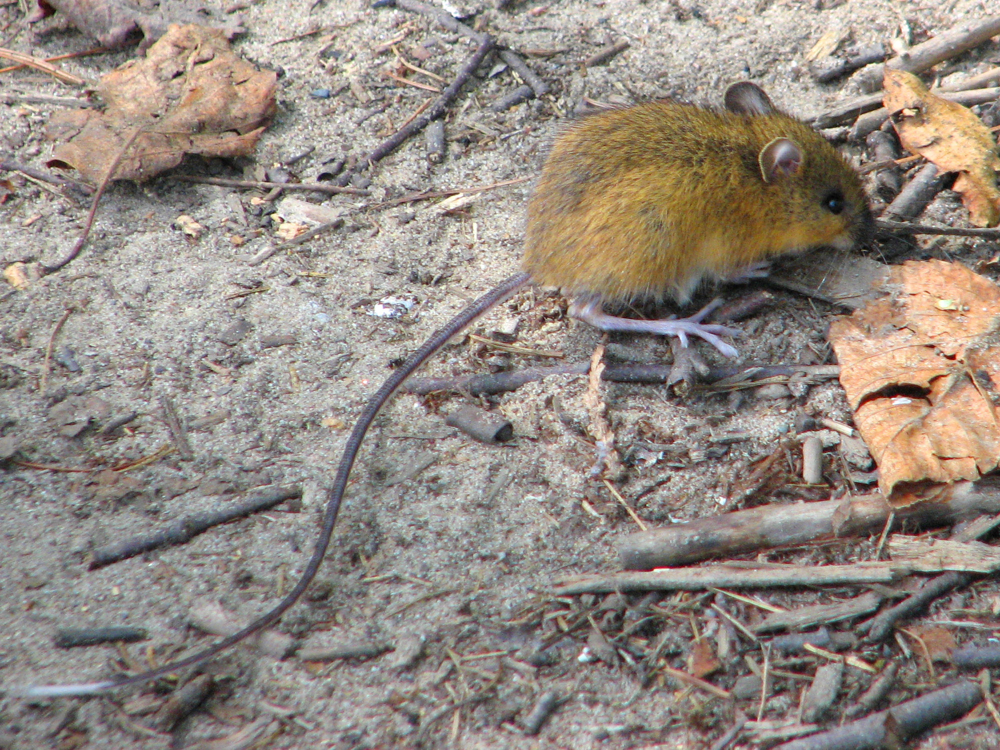
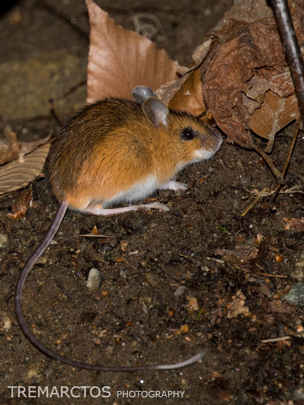
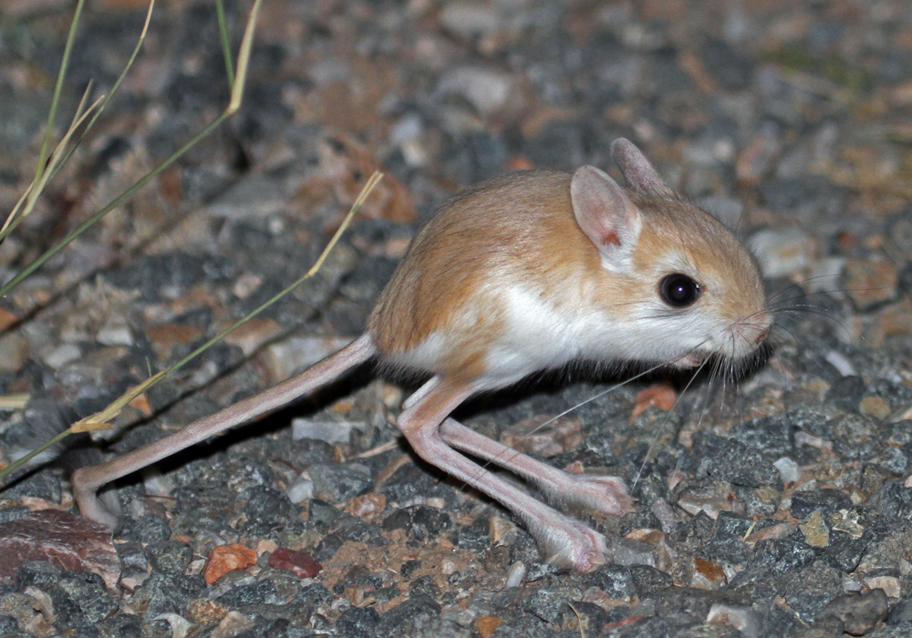
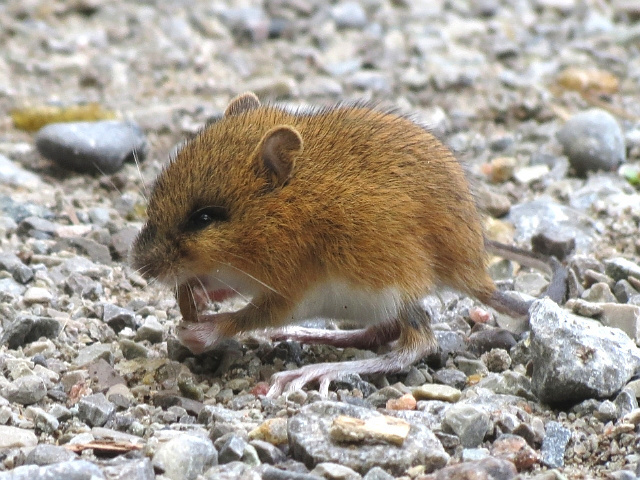
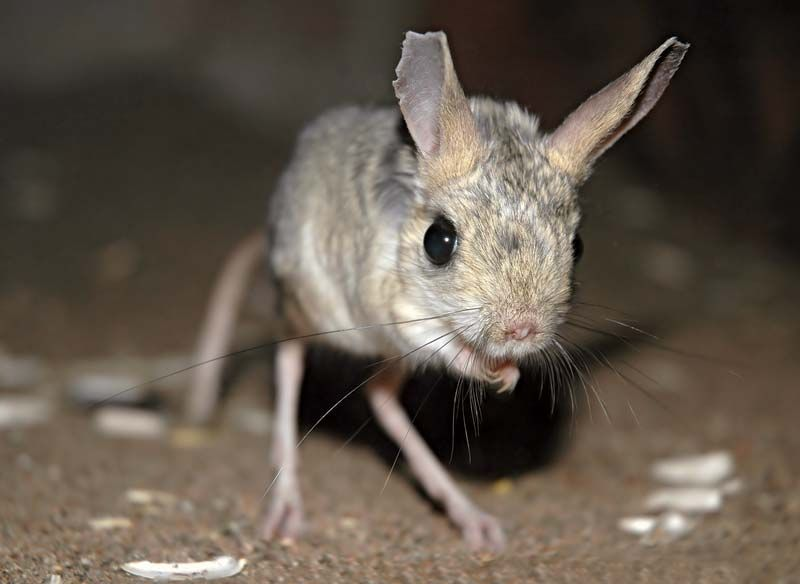

Sicista betulina
Dipodoidea
Dipodoidea is a superfamily of rodents, also known as dipodoids, found across the Northern Hemisphere. This superfamily includes over 50 species among the 16 genera in 3 families. They include the jerboas (family Dipodidae), jumping mice (family Zapodidae), and birch mice (family Sminthidae). Different species are found in grassland, deserts, and forests. They are all capable of saltation (jumping while in a bipedal stance), a feature that is most highly evolved in the desert-dwelling jerboas.
Taxonomy
Formerly, Dipodoidea contained only a single large family, Dipodidae, which contained jerboas, jumping mice, and birch mice as subfamilies. However, phylogenetic evidence found all three to be distinct families from one another, and thus they were split into three different families within Dipodoidea.
Characteristics
Dipodoids are small to medium-sized rodents, ranging from 4 to 26 cm (1.6 to 10.2 in) in body length, excluding the tail. They are all adapted for jumping, although to varying degrees. The jerboas have very long hind legs which, in most species, include cannon bones. They move either by jumping, or by walking on their hind legs. The jumping mice have long feet, but lack the extreme adaptations of the jerboas, so that they move by crawling or making short hops, rather than long leaps. Both jerboas and jumping mice have long tails to aid their balance. Birch mice have shorter tails and feet, but they, too, move by jumping. Most dipodoids are omnivorous, with a diet consisting of seeds and insects. Some species of jerboa, however, such as Allactaga sibirica, are almost entirely insectivorous. Like other rodents, they have gnawing incisors separated from the grinding cheek teeth by a gap, or diastema. The dental formula for dipodids is
Jerboas and birch mice make their nests in burrows, which, in the case of jerboas, may be complex, with side-chambers for storage of food. In contrast, while jumping mice sometimes co-opt the burrows of other species, they do not dig their own, and generally nest in thick vegetation. Most species hibernate for at least half the year, surviving on fat that they build up in the weeks prior to going to sleep. Dipodoids give birth to litters of between two and seven young after a gestation period of between 17 and 42 days. They breed once or twice a year, depending on the species.
Classification
Superfamily Dipodoidea
- Sminthidae
- Genus Sicista, birch mice
- Family Zapodidae, jumping mice
- Genus Eozapus
- Genus Napaeozapus
- Genus Zapus
- Family Dipodidae, jerboas
- Subfamily Allactaginae
- Subfamily Cardiocraniinae
- Subfamily Dipodinae
- Subfamily Euchoreutinae
Images


sleep

Woodland jumping mouse

Woodland-jumping-mouse

jerboas

birch mice

minnesota

rodent